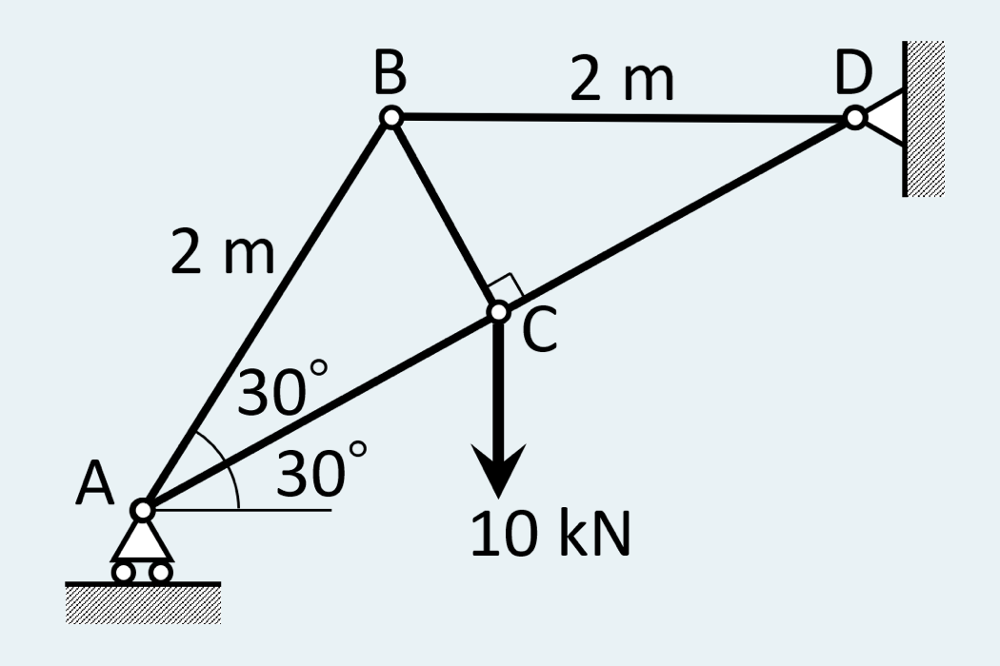
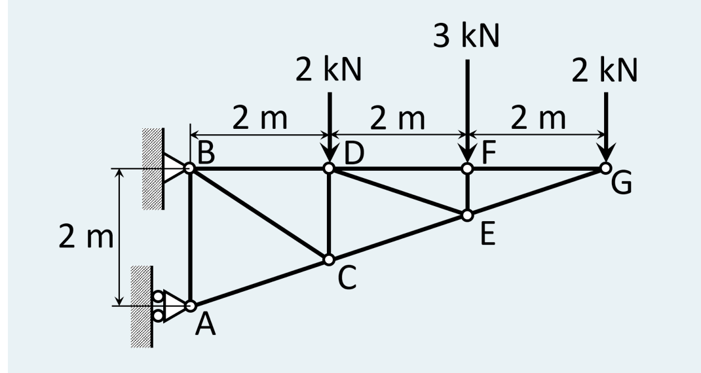

2026/10/27／第7回「平面トラスの静解析」の Moodle 小テスト（課題 7A〔必修〕全2問）。各問を、教材 第7回の道具（節点法・切断法）で、手順①〜⑥にそって解き直したもの。
Determine the internal forces in all members of the truss.
（このトラスの全部材の内力を求めなさい。）

解答欄：$F_{AB},F_{BC},F_{BD},F_{AC},F_{CD}$ それぞれの大きさ [kN] と、引張／圧縮。
解答
① 形を読む：$AB=2$ m、$\angle BAC=30^\circ$、$\angle ACB=90^\circ$ なので、直角三角形 ABC から
$$AC=AB\cos30^\circ=\sqrt3\ \mathrm m,\qquad BC=AB\sin30^\circ=1\ \mathrm m$$
A を原点にとると、AB は水平から $60^\circ$、AC は $30^\circ$ なので
$$A(0,0),\quad B(1,\sqrt3),\quad C\Big(\tfrac32,\tfrac{\sqrt3}2\Big),\quad D(3,\sqrt3)$$
（$BD=2$ m が水平なので D の高さは B と同じ $\sqrt3$。このとき D は直線 AC の延長上にある：$y=x\tan30^\circ=3/\sqrt3=\sqrt3$ ✓。）
どの節点から解くか：節点法は「未知が2本以下」の節点から始める。いまは A（AB, AC と反力 $A_y$：3つ）、B（AB, BC, BD：3つ）、C（AC, BC, CD：3つ）、D（BD, CD と反力2成分：4つ）で、どこも3つ以上。そこでまず全体の釣合いで反力 $A_y$ を出して A の未知を2つにする。
② 全体の釣合いから $A_y$：A はローラーで反力は鉛直（$A_y$、上向き）のみ。D のピンの反力 $D_x,D_y$ は D を通るので、D まわりのモーメントで消せる。D から見て $A_y$ の腕（水平距離）は $3$ m、10 kN の荷重（C）の腕は $3-\tfrac32=\tfrac32$ m： $$A_y\times3-10\times\tfrac32=0\ \Longrightarrow\ A_y=5.00\ \mathrm{kN}$$ （念のため：水平方向の外力は荷重にも A にもないので $D_x=0$、鉛直は $A_y+D_y=10$ より $D_y=5.00$ kN。）
③ 節点 A（未知：$F_{AB},F_{AC}$）。単位ベクトルは AB が $(\cos60^\circ,\sin60^\circ)=(\tfrac12,\tfrac{\sqrt3}2)$、AC が $(\cos30^\circ,\sin30^\circ)=(\tfrac{\sqrt3}2,\tfrac12)$。 $$\sum F_x:\ \tfrac12F_{AB}+\tfrac{\sqrt3}2F_{AC}=0\ \Longrightarrow\ F_{AB}=-\sqrt3\,F_{AC}$$ $$\sum F_y:\ 5+\tfrac{\sqrt3}2F_{AB}+\tfrac12F_{AC}=0$$ $F_{AB}$ を代入：$5+\tfrac{\sqrt3}2(-\sqrt3F_{AC})+\tfrac12F_{AC}=5-\tfrac32F_{AC}+\tfrac12F_{AC}=5-F_{AC}=0$。よって $$F_{AC}=+5.00\ \mathrm{kN}\ (\text{引張}),\qquad F_{AB}=-5\sqrt3=-8.66\ \mathrm{kN}\ (\text{圧縮})$$ ④ 節点 C（未知：$F_{BC},F_{CD}$。$F_{AC}$ は既知）。ここは BC が AD に垂直という形を使う：軸を AD に沿う $u=(\tfrac{\sqrt3}2,\tfrac12)$ と、それに垂直で B 向きの $n=(-\tfrac12,\tfrac{\sqrt3}2)$ にとると、BC は $n$ だけ、AC と CD は $u$ だけに成分をもつので、式が1本ずつ別々に解ける。荷重 $(0,-10)$ の成分は $u$：$-10\times\tfrac12=-5$、$n$：$-10\times\tfrac{\sqrt3}2=-8.66$。AC が C を引く向きは A の方（$-u$）。 $$u:\ -F_{AC}+F_{CD}-5=0\ \Longrightarrow\ F_{CD}=5+5=10.0\ \mathrm{kN}\ (\text{引張})$$ $$n:\ F_{BC}-8.66=0\ \Longrightarrow\ F_{BC}=5\sqrt3=8.66\ \mathrm{kN}\ (\text{引張})$$ ⑤ 節点 B（未知：$F_{BD}$ だけ）。B から A へ向かう向き $(-\tfrac12,-\tfrac{\sqrt3}2)$、C へ向かう向き $(\tfrac12,-\tfrac{\sqrt3}2)$、D へ向かう向き $(1,0)$： $$\sum F_y:\ -\tfrac{\sqrt3}2(F_{AB}+F_{BC})=-\tfrac{\sqrt3}2(-8.66+8.66)=0\ \ ✓\ (\text{検算になっている})$$ $$\sum F_x:\ -\tfrac12F_{AB}+\tfrac12F_{BC}+F_{BD}=0\ \Longrightarrow\ F_{BD}=\tfrac12(F_{AB}-F_{BC})=\tfrac12(-8.66-8.66)=-8.66\ \mathrm{kN}\ (\text{圧縮})$$ ⑥ 確かめ：(i) 節点 B の $\sum F_y$：B では未知が $F_{BD}$ だけ（水平）で、鉛直の式は未使用。それがちょうど 0 になった ✓。 (ii) 節点 D：D が受ける力は、BD から $(+8.66,0)$（圧縮なので D を B から遠ざける向き＝右）、CD から $10\times(-\tfrac{\sqrt3}2,-\tfrac12)=(-8.66,-5)$、反力 $(D_x,D_y)$。合計 0 より $D_x=0,\ D_y=5$：全体の釣合いの結果と一致 ✓。 (iii) 連立方程式で解き直し：全節点の式を1本の連立方程式にして数値で解いても同じ ✓。 (iv) 向きの感覚：C にぶら下がった荷重を、A–C–D の線が引き上げる形で支える（AC・CD は引張）。AB と BD は B を支える押す部材（圧縮）。
| 部材 | $F_{AB}$ | $F_{BC}$ | $F_{BD}$ | $F_{AC}$ | $F_{CD}$ |
|---|---|---|---|---|---|
| 大きさ [kN] | 8.66 | 8.66 | 8.66 | 5.00 | 10.0 |
| 引張／圧縮 | 圧縮 | 引張 | 圧縮 | 引張 | 引張 |
答え：$F_{AB}=F_{BD}=5\sqrt3\approx8.66$ kN（圧縮）、$F_{BC}=5\sqrt3\approx8.66$ kN（引張）、$F_{AC}=5.00$ kN（引張）、$F_{CD}=10.0$ kN（引張）
Determine the forces in members CE, DE and DF of the cantilever truss. Use the method of sections.
（片持ちトラスの部材 CE, DE, DF の力を求めなさい。切断法を使うこと。）

解答欄：「"Method of sections" を使って解きましたか？」→はい。$F_{CE},F_{DE},F_{DF}$ の大きさ [kN] と、引張／圧縮。
解答
① 形を読む：A を原点に、$A(0,0),\ B(0,2),\ D(2,2),\ F(4,2),\ G(6,2)$。下弦は A から G まで一直線で、$A(0,0)\to G(6,2)$ の傾きは $\tfrac13$ なので $$C\Big(2,\tfrac23\Big),\qquad E\Big(4,\tfrac43\Big)$$ （E は F の真下 $2-\tfrac43=\tfrac23$ m。）CE も DE も水平 2 m に対して鉛直 $\tfrac23$ m ずれる傾き $\tfrac13$ の部材で、E から見た単位ベクトルは $$E\to C:\ \tfrac1{\sqrt{10}}(-3,-1),\qquad E\to D:\ \tfrac1{\sqrt{10}}(-3,+1)$$ （水平 3：鉛直 1 の比。長さ $\sqrt{3^2+1^2}=\sqrt{10}$ で割った。）
② どこで切るか：求めたいのは DF, DE, CE のちょうど3本。この3本を横切る線（図の破線：D と F の間、たとえば $x=3$ m）で切ると、トラスは左（A, B, C, D）と右（E, F, G）の2つに分かれる。右側をとると、反力 A, B を知らなくてよい（右側には支持がない）。これが切断法の利点：全体の反力を先に出さなくても済む。
③ モーメントの点を選ぶ：3本のうち2本が通る点をモーメントの中心にすると、その2本が消えて残る1本だけの式になる。DE と CE は E で交わり、DF と DE は D で交わる。したがって：
④ E まわりのモーメント（反時計回りを正）：DE と CE は E を通るので消える。$F_{DF}$（切断部で左向き、E より鉛直に $\tfrac23$ m 上）は E を中心に反時計回り、G の 2 kN（E より水平に 2 m 右）は時計回り、F の 3 kN は E の真上で腕が 0： $$\tfrac23F_{DF}-2\times2=0\ \Longrightarrow\ F_{DF}=6.00\ \mathrm{kN}\ (\text{引張})$$ ⑤ D まわりのモーメント：DF と DE は D を通るので消える。$F_{CE}$ は E に作用し、力は $\tfrac1{\sqrt{10}}(-3,-1)\,F_{CE}$。E は D から見て $(+2,\,-\tfrac23)$ の位置（水平 2 m 右、鉛直 $\tfrac23$ m 下）。モーメント $=x F_y-yF_x$ より $$2\cdot\Big(-\tfrac{F_{CE}}{\sqrt{10}}\Big)-\Big(-\tfrac23\Big)\Big(-\tfrac{3F_{CE}}{\sqrt{10}}\Big)=-\tfrac{2F_{CE}}{\sqrt{10}}-\tfrac{2F_{CE}}{\sqrt{10}}=-\tfrac{4F_{CE}}{\sqrt{10}}$$ 荷重のモーメントは、F の 3 kN が D の 2 m 右で $2\times(-3)=-6$、G の 2 kN が 4 m 右で $4\times(-2)=-8$（合計 $-14$）。釣合い： $$-\tfrac{4}{\sqrt{10}}F_{CE}-14=0\ \Longrightarrow\ F_{CE}=-\tfrac{7\sqrt{10}}{2}=-3.5\times3.162=-11.07\ \mathrm{kN}\ (\text{圧縮})$$ ⑥ $F_{DE}$：鉛直方向の釣合い（右側全体、上向き正）。DE が右側にかける力は $\tfrac{F_{DE}}{\sqrt{10}}(-3,+1)$、CE は $\tfrac{F_{CE}}{\sqrt{10}}(-3,-1)$： $$\sum F_y:\ \frac{F_{DE}}{\sqrt{10}}-\frac{F_{CE}}{\sqrt{10}}-3-2=0\ \Longrightarrow\ F_{DE}=5\sqrt{10}+F_{CE}=5\sqrt{10}-3.5\sqrt{10}=1.5\sqrt{10}$$ $$F_{DE}=+4.74\ \mathrm{kN}\ (\text{引張})$$ 確かめ：(i) 水平方向の釣合い（まだ使っていない式）：$\sum F_x=-F_{DF}-\tfrac{3}{\sqrt{10}}(F_{DE}+F_{CE})=-6-\tfrac{3}{\sqrt{10}}(-2\sqrt{10})=-6+6=0$ ✓。 (ii) 別の方法（節点法）：節点 F に集まる部材は DF, FG（どちらも水平）と EF（鉛直）だけなので、水平の釣合いから $F_{FG}=F_{DF}=6.00$ kN、鉛直の釣合いから $F_{EF}=-3.00$ kN（圧縮、F の 3 kN を受け止める）。全節点を連立方程式で解いた数値解でも DF = 6.000、FG = 6.000、EF = −3.000 ✓。 (iii) 数値解との一致：同じ連立方程式の解で CE = −11.068、DE = 4.743 ✓。 (iv) 向きの感覚：荷重は下向きで、片持ち梁と同じく上弦（DF）は引張、下弦（CE）は圧縮になる ✓（教材 第7回 4.2節：上下の弦材が曲げを担う）。
| 部材 | $F_{CE}$ | $F_{DE}$ | $F_{DF}$ |
|---|---|---|---|
| 大きさ [kN] | 11.07 | 4.74 | 6.00 |
| 引張／圧縮 | 圧縮 | 引張 | 引張 |
答え：$F_{CE}=3.5\sqrt{10}\approx11.07$ kN（圧縮）、$F_{DE}=1.5\sqrt{10}\approx4.74$ kN（引張）、$F_{DF}=6.00$ kN（引張）。「Method of sections を使って解きましたか？」ははい。
① 切る本数は3本まで：右側の釣合い式は $\sum F_x,\sum F_y,\sum M$ の3本。切った部材が4本以上だと未知が式より多くなる。② E と D は「2本が交わる点」：その点まわりのモーメントでは、2本の力の腕が 0 になり式から消える。残る1本の力の腕だけを測ればよいので、連立方程式を解かずに1本ずつ求まる。③ 3本のうち2本が平行だと交点がない（遠方にある）ので、その場合は平行な2本に垂直な方向の力の釣合いを使う、と使い分ける。今回は3本とも交点があるので、モーメント2本＋鉛直1本で済んだ。